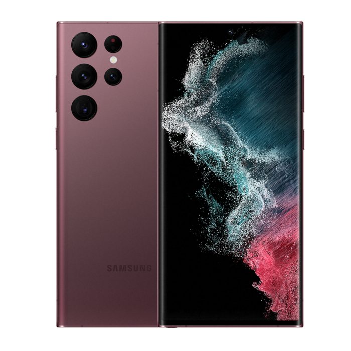

iphone

Apple iPhone 13 Pro Max é um smartphone iOS com características inovadoras que o tornam uma excelente opção para qualquer tipo de utilização. A tela de 6.7 polegadas coloca esse Apple no topo de sua categoria. A resolução também é alta: 2778x1284 pixel. As funcionalidades oferecidas pelo Apple iPhone 13 Pro Max são muitas e top de linha. Começando pelo 5G que permite a transferência de dados e excelente navegação na internet, além de conectividade Wi-fi e GPS presente no aparelho. Tem também leitor multimídia, videoconferência, e bluetooth. Enfatizamos a excelente memória interna de 1000 GB mas sem a possibilidade de expansão.
Samsung galaxy s22 ultra
O Samsung Galaxy S22 Ultra 5G é um smartphone Android de bom nível, ótimo para fotos, que pode satisfazer até o mais exigente dos usuários. Tem uma enorme tela Touchscreen de 6.8 polegadas e uma resolução de 3080x1440 pixels que é uma das mais altas atualmente em circulação. Sobre as características deste Samsung Galaxy S22 Ultra 5G na verdade não falta nada. Começando pelo 5G que permite a transferência de dados e excelente navegação na internet, além de conectividade Wi-fi e GPS. Tem também leitor multimídia, videoconferência e bluetooth. Enfatizamos a boa memória interna de 512 GB mas sem a possibilidade de expansão.
Xiaomi mi 11 ultra

O Xiaomi Mi 11 Ultra é um smartphone Android com características inovadoras que o tornam uma excelente opção para qualquer tipo de utilização, representando um dos melhores dispositivos móveis já feitos. A tela de 6.81 polegadas coloca esse Xiaomi no topo de sua categoria. Além disso a resolução é das mais altas atualmente em circulação: 3200x1440 pixel. As funcionalidades oferecidas pelo Xiaomi Mi 11 Ultra são muitas e todas top de linha. Começando pelo 5G que permite a transferência de dados e excelente navegação na internet, além de conectividade Wi-fi e GPS presente no aparelho. Tem também leitor multimídia, videoconferência, e bluetooth. Enfatizamos a excelente memória interna de 256 GB mas sem a possibilidade de expansão.